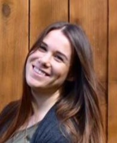

About Me
Hi, I'm Alicia Curths, a computer science undergraduate student with based out of Portland, Oregon. I have a passion for science, technology, and innovation, and am eager to apply my skills and knowledge to real-world challenges. Before turning to software, I spent 13 years as a radiologic technologist and mammographer. The career taught me how to work both independently and as part of multidisciplinary care teams, perform quality control on complex equipment, safeguard sensitive information under HIPAA, and think clearly under pressure in high-stakes situations. It also taught me how to communicate technical concepts in plain language; a skill I find just as valuable in code reviews and documentation as it is at the clinic. I bring that same attention to detail, reliability, and collaborative mindset to my work in computer science. I'm especially drawn to problems where careful engineering meets real human impact, and I'm excited to grow as an engineer who delivers software that's thoughtfully built, inclusive, and dependable.

Experience
Work History
Technical Skills
- Languages: Python, C, C++, and Java
- Skills: Strong problem-solving and analytical skills
- Tools & Technologies: Git/Github, PostgreSQL, Visual Studio Code, Linux, Docker
Projects
BSU Tool
Text placeholder.
Reddit Sentiment Analyzer
Text placeholder.